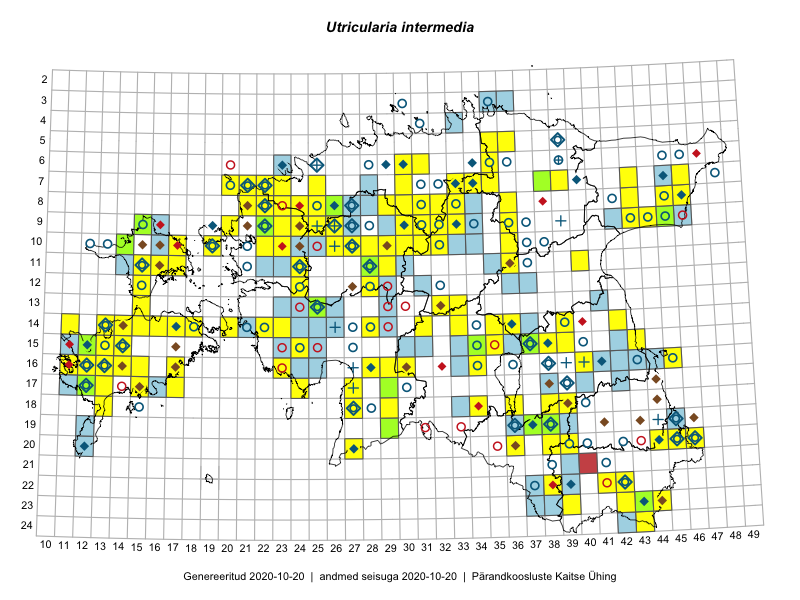

Utricularia intermedia
Uuendatud: 2016-12-02
Kaardile koondatud taksonid: Utricularia intermedia Hayne

Kaart põhineb 105 kirjel, neist vaatlusi 104 ja eksemplare 1. Taksonit on leitud 87 ruudust.
Kuvatud viited 20 esimesele andmebaasikirjele, ülejäänud PlutoFis
- Toomas Kukk, Eerik Leibak: 2015-08-09: 14-15: ala
- Ott Luuk, Toivo Sepp: 2015-07-29: 09-31: ala
- Peedu Saar: 2015-07-14: 15-38: ala
- Ott Luuk, Peedu Saar: 2015-08-13: 24-43: ala
- Ott Luuk, Peedu Saar: 2015-08-12: 23-43: ala
- Peedu Saar, Liina Oja: 2015-07-22: 08-45: ala
- Toomas Kukk, Tiit Hallikma: 2015-06-11: 11-29: ala
- Peedu Saar, Liina Oja: 2015-07-24: 09-45: ala
- Peedu Saar, Ott Luuk: 2015-08-12: 23-42: ala
- Ott Luuk, Hannes Pehlak: 2015-07-24: 09-44: ala
- Toomas Kukk, Timo Luhamäe, Kersti Tambets, Sten Mander, Janika Sammasto: 2014-07-30: 20-45: ala
- Ott Luuk, Hannes Pehlak: 2015-06-10: 14-28: ala
- Jana-Maria Habicht, Ester Valdvee: 2015-07-20: 07-34: ala
- Indrek Tammekänd, Liisa Rennel, Agu Leivits, Hannes Pehlak, Irja Tammekänd: 2015-04-27: 15-24: ala
- Indrek Tammekänd, Katrin Aavik: 2015-06-15: 13-25: ala
- Ott Luuk, Toivo Sepp: 2015-08-20: 11-29: ala
- Ott Luuk: 2015-08-03: 10-32: ala
- Ott Luuk, Peedu Saar: 2014-08-14: 10-30: ala
- Mari Reitalu: 2015-08-29: 16-13: ala
- Eeva-Maria Jeletsky, Tarmo Niitla: 2015-08-10: 19-37: ala